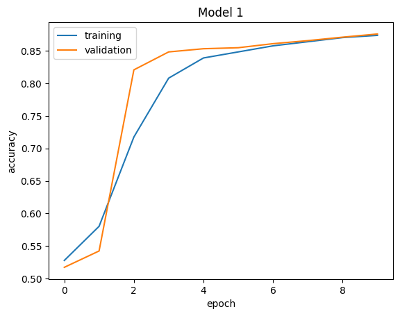
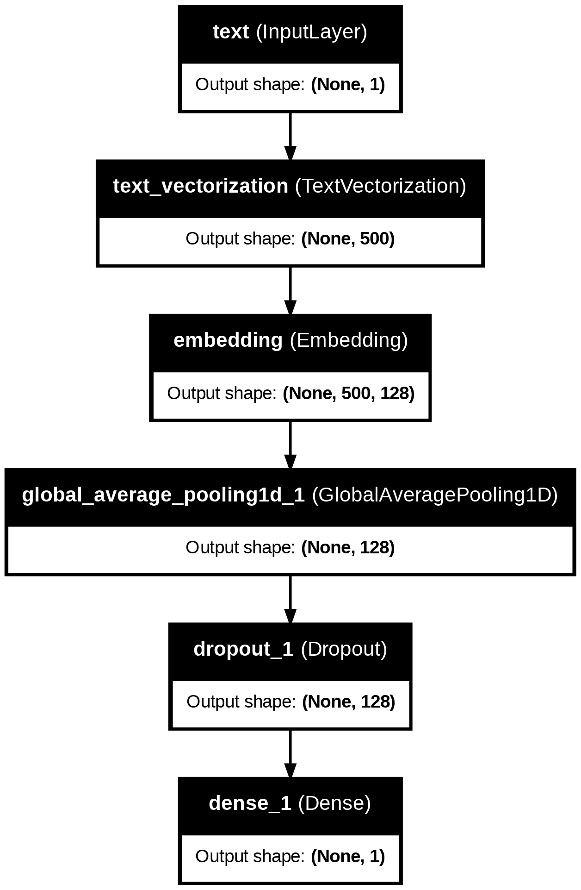
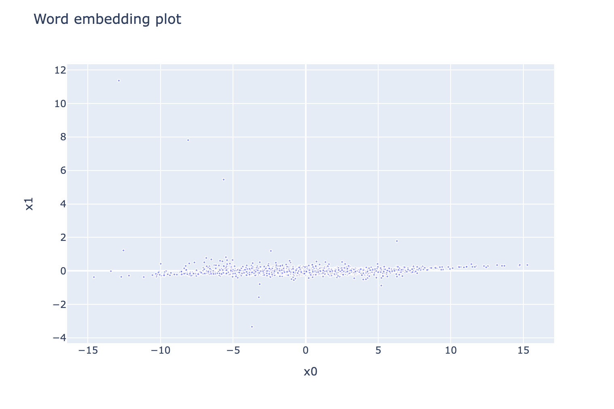

Experimenting with different Keras Models to classify fake news
week 10
homework6
Author
Anika Misra
Published
March 11, 2024
Introduction
Welcome!
In today’s blog post, we will be classifying fake news articles. We will be experimenting with different types of keras layers. We will also analyze our best model’s word embeddings and see what this means in context of politics.
Note: when we want to determine whether a news article is legitimate or trustworthy, we can look at 2 components: 1. First, obviously, the article itself. It may contain certain key words and hyperboles that signify misinformation. 2. Another great way to tell if news is take is by looking at the title, which often overexxagerates to serve as “clickbait”.
In today’s post, we will be building a classifier that, given an article, can determine if it is fake news or not.
Preparing data
First, let’s import all the necessary packages.
import numpy as npimport pandas as pdimport tensorflow as tffrom nltk.corpus import stopwordsimport nltknltk.download('stopwords')pio.renderers.default="iframe"
[nltk_data] Downloading package stopwords to /root/nltk_data...
[nltk_data] Package stopwords is already up-to-date!
True
Now, let’s obtain our training data. Our training data comes from the article: - Ahmed H, Traore I, Saad S. (2017) “Detection of Online Fake News Using N-Gram Analysis and Machine Learning Techniques. In: Traore I., Woungang I., Awad A. (eds) Intelligent, Secure, and Dependable Systems in Distributed and Cloud Environments. ISDDC 2017. Lecture Notes in Computer Science, vol 10618. Springer, Cham (pp. 127-138).
This data has already been cleaned a bit. Let’s see what it looks like.
# obtain training data from sourcetrain_url ="https://github.com/PhilChodrow/PIC16b/blob/master/datasets/fake_news_train.csv?raw=true"# read into file using pandas dataframetrain_data = pd.read_csv(train_url)train_data.head()
Unnamed: 0
title
text
fake
0
17366
Merkel: Strong result for Austria's FPO 'big c...
German Chancellor Angela Merkel said on Monday...
0
1
5634
Trump says Pence will lead voter fraud panel
WEST PALM BEACH, Fla.President Donald Trump sa...
0
2
17487
JUST IN: SUSPECTED LEAKER and “Close Confidant...
On December 5, 2017, Circa s Sara Carter warne...
1
3
12217
Thyssenkrupp has offered help to Argentina ove...
Germany s Thyssenkrupp, has offered assistance...
0
4
5535
Trump say appeals court decision on travel ban...
President Donald Trump on Thursday called the ...
0
Raw data analysis
Based on the “Unnamed” column, it appears as though the data has already been shuffled
“fake” column is the output (binary): 1 for fake and 0 for legitimate
For this post, we will be using Keras models. Since Keras is an API of tensorflow, tensorflow objects are well-integrated into Keras. So let’s write a function that can turn out pandas.DataFrame object into a tensorflow.data.Dataset object.
This is how we want our model to work: 1. input 1: “text” 2. input 2: “title” 3. output: “fake”
So we must generate a tensorflow.data.Dataset object with multiple inputs. Here is a thread that shows us how to do that:
Furthermore, here is a thread that explains how to remove stopwords: https://stackoverflow.com/questions/29523254/python-remove-stop-words-from-pandas-dataframe
Brief explanation of from_tensor_slices() method
The way that the from_tensor_slices() method works is that it takes in two or more “tensors”, or in this case, numpy array values, and creates a dataset that slices each input “tensor” in the first dimension.
So in our case, since the [‘text’], [‘title’], and [‘fake’] column all have the same shape and are 1-d arrays, then the from_tensor_slices() method will just create a dataset as such: 1. input: tuple (title, text) 2. output: fake
Let’s take a look at the function.
def make_dataset(df):# convert all text to lowercase df['text'] = df['text'].str.lower() df['title'] = df['title'].str.lower()# remove stopwords stop = stopwords.words('english') df['text'] = df['text'].apply(lambda x: ' '.join([word for word in x.split() if word notin (stop)])) df['title'] = df['title'].apply(lambda x: ' '.join([word for word in x.split() if word notin (stop)]))# now, we want to make a tf.data.Dataset object with inputs as titles and text, output as target# "fake" is the target variable, separate it target = df.pop('fake')# use tensorflow.data.Dataset.from_tensor_slices method dataset = tf.data.Dataset.from_tensor_slices(((df['title'].values, df['text'].values), target.values))# batch data to train in chunks (increase training speed) dataset = dataset.batch(100)return dataset
Split test val
Now, let’s use our make_dataset function to create a tensorflow.data.Dataset object out of our original pandas.Dataframe. Then, let’s split off 20% of it for validation data.
Note we are not splitting any data for testing, because the new, unseen testing dataset will come later.
tfdata = make_dataset(train_data)# size of validation dataset is 20% of all data# round down using int()val_size =int(len(tfdata) *0.2)# take() method creates dataset with the first "val_size" elementsval_data = tfdata.take(val_size)# skip() method skips over the first "val_size" elementstrain_data = tfdata.skip(val_size)
Base rate accuracy
Let’s take a look at the base rate accuracy of our model. Recall that the base rate refers to the model making the same guess every time. The base guess chosen is the most common value in the ouput.
outputs = [] # store all target variables in a list# in order to iterate through the tensorflow values we must# 1. unbatch the data# 2. create an iteratortf_values = train_data.unbatch().as_numpy_iterator()# now we can iterate through tensorflow values# recall that the first value is the input (tuple), which we can ignorefor _, output in tf_values: outputs.append(output)# choose the base guessbase_guess =max(outputs.count(0), outputs.count(1))print("Number of fake outputs: ", outputs.count(0), " Number of true outputs: ", outputs.count(1))
Number of fake outputs: 8537 Number of true outputs: 9412
Since there are more “true” outputs than “fake” outputs in our targets, our base guess is be “true”. Let’s see how accurate this would be.
In general, keras layers help transform our inputs to our outputs in the model. Each layer performs an operation in our model that gets passed as an output to the next layer. For our model, let’s use the following text vectorization layer:
#preparing a text vectorization layer for tf modelsize_vocabulary =2000# standardize text data by making everything lower case and removing punctuationdef standardization(input_data): lowercase = tf.strings.lower(input_data) no_punctuation = tf.strings.regex_replace(lowercase,'[%s]'% re.escape(string.punctuation),'')return no_punctuation# transform text data into a layer to be used in the modeltext_vectorize_layer = TextVectorization( standardize=standardization, max_tokens=size_vocabulary, # only consider this many words output_mode='int', output_sequence_length=500)# adapt vectorization layer to text# map this text vectorization layer from x[0] (title) AND x[1] (text)text_vectorize_layer.adapt(train_data.map(lambda x, y: tf.concat([x[0], x[1]], axis=0)))
Let’s also create an embedding layer for the models.
What just happened? With NLP, we usually need these two layers:
TextVectorization
This layer preprocesses the words and turns words into tokens for machine learning.
Embedding layer
The embedding layer assigns a representation of each word in terms of semantic meaning, which allows us to see which words are most closely related to each other. A higher embedding dimension means that the model is able to find relationships between words’ meanings easier. However, this comes with the tradeoff of overfitting.
In our model, an embedding dimension of 128 seems to have good results, as we will see.
Why use the same layers for all models? We are trying to answer the question: “When detecting fake news, is it most effective to focus on only the title of the article, the full text of the article, or both?” By keeping all control variables the same, we can focus on solely the inputs of the different models and then truly compare.
Model 1: Article title
For the first model, we will use only the article title as the input when creating our model to predict whether the news article is fake or not. Luckily, we do not need to create a new tf.data.Dataset object from the train object, because we can just specify the appropriate input to the keras.Model.
We will be using Functional API rather than Sequential API for these models because we will eventually need to use the same layer in multiple parts of the model, in model #3.
# create an input layer for the modeltitle_input = layers.Input(shape=(1,), dtype=tf.string, name='title')# now define the features of the model using the input# first, pass through the text vectorization and embedding layerstitle_features = text_vectorize_layer(title_input)title_features = embedding_layer(title_features)# next, we want to prevent over fitting:# reduces dimensionality and simplifies modeltitle_features = layers.GlobalAveragePooling1D()(title_features)# and use dropout layers to avoid overfittingtitle_features = Dropout(0.2)(title_features)# finally, create prediction layer# use 1 neuron because this is classification problemtitle_pred = Dense(1, activation='sigmoid')(title_features)# input these layers into keras Modelmodel1 = Model(title_input, title_pred)
This model takes in an input layer of shape 1, transforms it to the correct shape for the other layers that we defined, and then finally outputs a prediction layer of shape 1.
Now, let’s compile and then fit the model.
Compiling: This is when we specify the loss function, optimizer, and metric we will use before training. We will use binary crossentropy because we have a binary classification model.
Fitting: Finally, we will use our predefined layers to train and the model. 10 epochs appears to give us good results without overfitting.
model1.compile(loss='binary_crossentropy', optimizer='adam', metrics=['accuracy'])# use x[0] because we are looking at titles onlyhistory1 = model1.fit(train_data.map(lambda x, y: (x[0], y)), epochs=10, validation_data=val_data.map(lambda x, y: (x[0], y)))
WARNING:tensorflow:AutoGraph could not transform <function <lambda> at 0x7b133a8f7490> and will run it as-is.
Cause: could not parse the source code of <function <lambda> at 0x7b133a8f7490>: found multiple definitions with identical signatures at the location. This error may be avoided by defining each lambda on a single line and with unique argument names. The matching definitions were:
Match 0:
lambda x, y: (x[0], y)
Match 1:
lambda x, y: (x[0], y)
To silence this warning, decorate the function with @tf.autograph.experimental.do_not_convert
WARNING:tensorflow:AutoGraph could not transform <function <lambda> at 0x7b133a8a5480> and will run it as-is.
Cause: could not parse the source code of <function <lambda> at 0x7b133a8a5480>: found multiple definitions with identical signatures at the location. This error may be avoided by defining each lambda on a single line and with unique argument names. The matching definitions were:
Match 0:
lambda x, y: (x[0], y)
Match 1:
lambda x, y: (x[0], y)
To silence this warning, decorate the function with @tf.autograph.experimental.do_not_convert
WARNING: AutoGraph could not transform <function <lambda> at 0x7b133a8f7490> and will run it as-is.
Cause: could not parse the source code of <function <lambda> at 0x7b133a8f7490>: found multiple definitions with identical signatures at the location. This error may be avoided by defining each lambda on a single line and with unique argument names. The matching definitions were:
Match 0:
lambda x, y: (x[0], y)
Match 1:
lambda x, y: (x[0], y)
To silence this warning, decorate the function with @tf.autograph.experimental.do_not_convert
WARNING: AutoGraph could not transform <function <lambda> at 0x7b133a8a5480> and will run it as-is.
Cause: could not parse the source code of <function <lambda> at 0x7b133a8a5480>: found multiple definitions with identical signatures at the location. This error may be avoided by defining each lambda on a single line and with unique argument names. The matching definitions were:
Match 0:
lambda x, y: (x[0], y)
Match 1:
lambda x, y: (x[0], y)
To silence this warning, decorate the function with @tf.autograph.experimental.do_not_convert
Epoch 1/10
180/180 [==============================] - 8s 38ms/step - loss: 0.6898 - accuracy: 0.5279 - val_loss: 0.6871 - val_accuracy: 0.5173
Epoch 2/10
180/180 [==============================] - 6s 31ms/step - loss: 0.6779 - accuracy: 0.5803 - val_loss: 0.6672 - val_accuracy: 0.5424
Epoch 3/10
180/180 [==============================] - 6s 32ms/step - loss: 0.6478 - accuracy: 0.7175 - val_loss: 0.6252 - val_accuracy: 0.8207
Epoch 4/10
180/180 [==============================] - 6s 33ms/step - loss: 0.5977 - accuracy: 0.8080 - val_loss: 0.5684 - val_accuracy: 0.8482
Epoch 5/10
180/180 [==============================] - 6s 31ms/step - loss: 0.5379 - accuracy: 0.8389 - val_loss: 0.5087 - val_accuracy: 0.8531
Epoch 6/10
180/180 [==============================] - 6s 35ms/step - loss: 0.4817 - accuracy: 0.8482 - val_loss: 0.4568 - val_accuracy: 0.8547
Epoch 7/10
180/180 [==============================] - 6s 32ms/step - loss: 0.4335 - accuracy: 0.8575 - val_loss: 0.4154 - val_accuracy: 0.8609
Epoch 8/10
180/180 [==============================] - 9s 49ms/step - loss: 0.3963 - accuracy: 0.8639 - val_loss: 0.3829 - val_accuracy: 0.8656
Epoch 9/10
180/180 [==============================] - 6s 33ms/step - loss: 0.3665 - accuracy: 0.8702 - val_loss: 0.3576 - val_accuracy: 0.8709
Epoch 10/10
180/180 [==============================] - 5s 28ms/step - loss: 0.3424 - accuracy: 0.8736 - val_loss: 0.3367 - val_accuracy: 0.8758
Let’s also quickly write a function to plot the history of the training accuracy and validation accuracy throughout time.
from matplotlib import pyplot as pltdef plot_history(history, model_name ="Model"):# we want both training and validation accuracies plt.plot(history.history["accuracy"], label ="training") plt.plot(history.history["val_accuracy"], label ="validation")# x tells us "time", or number of epochs plt.gca().set(xlabel ="epoch", ylabel ="accuracy") plt.legend() plt.title(model_name) plt.show()
plot_history(history1, "Model 1")

As we can see, both the training data and the validation data appear to be increasing and plateauing, which is a good sign. There is no sign of overfitting (because the validation accuracy is not decreasing). Let’s take a look at the accuracy of this model:
# obtain values of title, text, and output separately from the validation datatitle_val = [title.numpy() for (title, text), output in val_data]text_val = [text.numpy() for (title, text), output in val_data]output_val = [output.numpy() for (title, text), output in val_data]# concatenate to use in evaluate functiontitle_val = np.concatenate(title_val)output_val = np.concatenate(output_val)# evaluateloss1, accuracy1 = model1.evaluate(title_val, output_val, verbose=2)print(f'Model 1 Accuracy: {accuracy1}')
The accuracy of the first model is 87.5% on the validation data set. The fact that this is based on the titles alone is impressive! That means that the titles of articles can tell you a lot about whether or not they are fake news.
But intuitively, it seems like the actual text in the article would be a better indicator. There is simply more data and more information there. This brings us to model 2.
Model 2: Article text
For this second model, we will construct it similarly to how we constructed model 1, except we will only be looking at article text as an input.
Our embedding layer and text vectorization layers will remain the same. So we can just get started by defining the input layers for the models.
In fact, because we are sharing the textvectorization and embedding layers, and we want to have the same overfitting reduction techniques as model 1, we can just reuse the layers from model 1 but then train on the “text” instead of titles.
# create an input layer for the model# everything remains the same except for input! here we use text.text_input = layers.Input(shape=(1,), dtype=tf.string, name='text')# now define the features of the model using the input# first, pass through the text vectorization and embedding layers# note we use the same text_vectorize layer for text and title!text_features = text_vectorize_layer(text_input)text_features = embedding_layer(text_features)# next, we want to prevent over fitting:text_features = layers.GlobalAveragePooling1D()(text_features)text_features = Dropout(0.2)(text_features)# finally, create prediction layertext_pred = Dense(1, activation='sigmoid')(text_features)# input these layers into keras Modelmodel2 = Model(text_input, text_pred)
And, let’s see what the training history of model 2 looks like.
plot_history(history2, "Model 2")

Hm… this doesn’t look the most accurate. Let’s look at the accuracy of model 2 on the validation dataset:
# concatenate text to use in evaluate functiontext_val = np.concatenate(text_val)# evaluate (output_val was already created in model 1)loss2, accuracy2 = model2.evaluate(text_val, output_val, verbose=2)print(f'Model 1 Accuracy: {accuracy2}')
So, model 2 appears to perform worse than model 1, without changing any layers. The reason for this is probably that we need to add more layers to our model since our input data is now more complex (we are inputting an entire article as opposed to just a phrase from the title).
For model 3, let’s utilize both text and title, and also add more layers to improve the overall performance.
Model 3: text and title
Since we already defined the features for model 1 (title) and model 2 (text), we can simply combine these features when creating the layers for model 3.
Also, we want to add some more dense layers to improve the overall model performance.
Finally, we need to add a prediction / output layer.
# inputs (same as before)title_input = layers.Input(shape=(1,), dtype=tf.string, name='title')text_input = layers.Input(shape=(1,), dtype=tf.string, name='text')# features (same as before)# title featurestitle_features = text_vectorize_layer(title_input) # NLP layerstitle_features = embedding_layer(title_features)title_features = layers.GlobalAveragePooling1D()(title_features) # layers to prevent overfittingtitle_features = Dropout(0.2)(title_features)# text featurestext_features = text_vectorize_layer(text_input)text_features = embedding_layer(text_features)text_features = layers.GlobalAveragePooling1D()(text_features)text_features = Dropout(0.2)(text_features)# combine features for model3both_features = layers.concatenate([title_features, text_features])both_features = Dropout(0.2)(both_features)both_pred = Dense(1, activation='sigmoid')(both_features)model3 = Model([title_input, text_input], both_pred)model3.compile(loss='binary_crossentropy', optimizer='adam', metrics=['accuracy'])# map to full x-tuple because we want both text and title inputhistory3 = model3.fit(train_data.map(lambda x, y: (x, y)), epochs=11, validation_data=val_data.map(lambda x, y: (x, y)))
WARNING:tensorflow:AutoGraph could not transform <function <lambda> at 0x7b13195fc940> and will run it as-is.
Cause: could not parse the source code of <function <lambda> at 0x7b13195fc940>: found multiple definitions with identical signatures at the location. This error may be avoided by defining each lambda on a single line and with unique argument names. The matching definitions were:
Match 0:
lambda x, y: (x, y)
Match 1:
lambda x, y: (x, y)
To silence this warning, decorate the function with @tf.autograph.experimental.do_not_convert
WARNING:tensorflow:AutoGraph could not transform <function <lambda> at 0x7b133435d240> and will run it as-is.
Cause: could not parse the source code of <function <lambda> at 0x7b133435d240>: found multiple definitions with identical signatures at the location. This error may be avoided by defining each lambda on a single line and with unique argument names. The matching definitions were:
Match 0:
lambda x, y: (x, y)
Match 1:
lambda x, y: (x, y)
To silence this warning, decorate the function with @tf.autograph.experimental.do_not_convert
WARNING: AutoGraph could not transform <function <lambda> at 0x7b13195fc940> and will run it as-is.
Cause: could not parse the source code of <function <lambda> at 0x7b13195fc940>: found multiple definitions with identical signatures at the location. This error may be avoided by defining each lambda on a single line and with unique argument names. The matching definitions were:
Match 0:
lambda x, y: (x, y)
Match 1:
lambda x, y: (x, y)
To silence this warning, decorate the function with @tf.autograph.experimental.do_not_convert
WARNING: AutoGraph could not transform <function <lambda> at 0x7b133435d240> and will run it as-is.
Cause: could not parse the source code of <function <lambda> at 0x7b133435d240>: found multiple definitions with identical signatures at the location. This error may be avoided by defining each lambda on a single line and with unique argument names. The matching definitions were:
Match 0:
lambda x, y: (x, y)
Match 1:
lambda x, y: (x, y)
To silence this warning, decorate the function with @tf.autograph.experimental.do_not_convert
Epoch 1/11
180/180 [==============================] - 23s 109ms/step - loss: 0.4027 - accuracy: 0.8777 - val_loss: 0.2707 - val_accuracy: 0.9467
Epoch 2/11
180/180 [==============================] - 19s 108ms/step - loss: 0.2203 - accuracy: 0.9569 - val_loss: 0.1909 - val_accuracy: 0.9589
Epoch 3/11
180/180 [==============================] - 19s 103ms/step - loss: 0.1665 - accuracy: 0.9639 - val_loss: 0.1582 - val_accuracy: 0.9600
Epoch 4/11
180/180 [==============================] - 20s 112ms/step - loss: 0.1401 - accuracy: 0.9681 - val_loss: 0.1395 - val_accuracy: 0.9638
Epoch 5/11
180/180 [==============================] - 19s 106ms/step - loss: 0.1230 - accuracy: 0.9710 - val_loss: 0.1267 - val_accuracy: 0.9660
Epoch 6/11
180/180 [==============================] - 21s 119ms/step - loss: 0.1092 - accuracy: 0.9731 - val_loss: 0.1167 - val_accuracy: 0.9678
Epoch 7/11
180/180 [==============================] - 19s 108ms/step - loss: 0.1002 - accuracy: 0.9750 - val_loss: 0.1088 - val_accuracy: 0.9691
Epoch 8/11
180/180 [==============================] - 18s 102ms/step - loss: 0.0923 - accuracy: 0.9755 - val_loss: 0.1021 - val_accuracy: 0.9707
Epoch 9/11
180/180 [==============================] - 19s 104ms/step - loss: 0.0848 - accuracy: 0.9779 - val_loss: 0.0963 - val_accuracy: 0.9720
Epoch 10/11
180/180 [==============================] - 18s 102ms/step - loss: 0.0792 - accuracy: 0.9789 - val_loss: 0.0913 - val_accuracy: 0.9740
Epoch 11/11
180/180 [==============================] - 19s 105ms/step - loss: 0.0745 - accuracy: 0.9799 - val_loss: 0.0870 - val_accuracy: 0.9753
import numpy as np# Assuming val_data is your validation dataset and it's in the same format as your training datatitle_val = []text_val = []labels_val = []for element in val_data: (title, text), labels = element title_val.append(title.numpy()) text_val.append(text.numpy()) labels_val.append(labels.numpy())title_val = np.concatenate(title_val)text_val = np.concatenate(text_val)labels_val = np.concatenate(labels_val)# Model 3: Using both the title and the textloss3, accuracy3 = model3.evaluate([title_val, text_val], labels_val, verbose=2)print(f'Model 3 Accuracy: {accuracy3}')
# use the same make_dataset function to convert pd.DataFrame to tf datasettest_tf = make_dataset(test_data)
# obtain values of title, text, and output separately from the validation datatitle_test = [title.numpy() for (title, text), output in test_tf]text_test = [text.numpy() for (title, text), output in test_tf]output_test = [output.numpy() for (title, text), output in test_tf]# concatenate to use in evaluate functiontitle_test = np.concatenate(title_test)text_test = np.concatenate(text_test)output_test = np.concatenate(output_test)# evaluateloss3, accuracy3 = model3.evaluate([title_test, text_test] output_test, verbose=2)print(f'Model 3 Test Accuracy: {accuracy3}')
702/702 - 7s - loss: 0.0909 - accuracy: 0.9726 - 7s/epoch - 10ms/step
Model 3 Test Accuracy: 0.9725600481033325
Awesome! So our model performs with 97% accuracy, even on unseen data. That means that we did not overfit it. Pretty awesome!
Word embedding visualization
Let’s visualize the word embeddings from our best model.
# first, we will get the weights from the embedding layerweights = model3.get_layer('embedding').get_weights()[0]vocab = text_vectorize_layer.get_vocabulary() # obtain vocabulary
from sklearn.decomposition import PCApca = PCA(n_components=2)weights = pca.fit_transform(weights)
Great! So we have reduced our word-embeddings to 2 dimensions. And note that we only took in 2000 words to start. Let’s take a look at what this looks like visually.
import plotly.express as pxfig = px.scatter(embedding_df, x ="x0", y ="x1", size =list(np.ones(len(embedding_df))), size_max =3, hover_name ="word")
After plotting the above figure, you should get a result like this:

Screenshot 2024-03-11 at 11.20.59 PM.png
In this word embedding visualization, words that are semantically similar are placed close together.
Same verb with variations in usage:
We can see that the words - ‘lie’ - ‘lies’ - ‘lying’
are all on the central right of the diagram. To us, this isn’t a very exciting example because these are all variations of the same exact verb. However, it is important to note that the model does not know this. Yet the model is able to determine that these are semantically similar.
Semantically similar in context of news:
For a more interesting example, we can see that - ‘city’ - ‘government’
are close together, as well. In terms of political news, it makes sense that these two words would be used within the same context. However, if we were analyzing agricultural articles, then these might not be considered so semantically similar. Something to think about!
Outlier is not similar to anything else Finally, we have some strange words that don’t appear to be semantically similar to anything else. For example, - “I”
is on the upper left outskirt and is not close to anything else. This makes sense, as the first-person singular pronoun does not really have any synonyms.
Conclusion
Today, we saw that using the same model, “title” seemed to be a better determinant than “text” alone. However, this might have just been because we were using simple models to begin, and “title” is much simpler than an entire news article.
So then, for our third model, we added a few more dense layers to our model and took in multiple inputs. The result was a model with 97% test accuracy rate!
When looking at the word embeddings, we saw how important the context is for semantic similarity. For example, “Government” and “city” are not necessarily similar in every context.
Next time you encounter a news article, try inputting it into this model before you believe what you read.